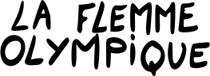

Présentation de l'Équipe de la Flemme Olympique
Notre Équipe
Dans l'univers La Flemme Olympique, où l'effort est un concept étranger et la détente une discipline à part entière, nous avons l'honneur de vous présenter notre équipe exceptionnelle de neuf champions de la paresse, prêts à défendre les couleurs de nos services dans des épreuves où l'immobilité et la relaxation sont primordiales.
-
Marie "La Dormeuse" Nantes
- Spécialité : Sieste de compétition
- Description : Championne incontestée de la sieste prolongée, Marie peut dormir n'importe où et n'importe quand. Son record de 18 heures sans interruption fait d'elle un atout majeur pour l'équipe.
-
Jessica "La Zen" Guillet
- Spécialité : Méditation passive
- Description : Experte en relaxation profonde, Jessica excelle dans l'art de rester immobile tout en gardant un état de relaxation totale. Sa capacité à méditer sans bouger pendant des heures est impressionnante.
-
Gael "Le Statique" Kervinio
- Spécialité : Immobilité extrême
- Description : Avec une endurance à toute épreuve, Gael peut rester immobile pendant des périodes prolongées. Son calme et sa sérénité sont des atouts indispensables pour l'équipe.
-
Audrey "La Sériphile" Chancel
- Spécialité : Marathon de séries
- Description : Audrey peut enchaîner les épisodes de séries télévisées sans interruption, avec une concentration inégalée. Sa passion pour le binge-watching est légendaire.
-
Karine "La Lectrice" Beaubeau
- Spécialité : Lecture nonchalante
- Description : Karine possède une capacité unique à lire des livres pendant des heures sans bouger. Son endurance mentale et physique en fait un pilier de l'équipe.
-
Lise "La Flâneuse" Mouchel
- Spécialité : Balades lentes
- Description : Maîtresse de la promenade au ralenti, Lise incarne l'art de la flânerie. Elle peut se promener sans but pendant des heures, appréciant chaque instant de lenteur.
-
Aurelie "La Couch Potato" Lecourt
- Spécialité : Immersion canapé
- Description : Aurelie excelle dans l'art de rester affalée sur un canapé, entourée de coussins. Sa capacité à trouver la position parfaite pour le maximum de confort est inégalée.
-
Anne "La Procrastinatrice" Audru
- Spécialité : Procrastination stratégique
- Description : Anne est une virtuose de la procrastination. Elle sait comment retarder l'inévitable avec une maîtrise remarquable, transformant la procrastination en un art de vivre.
-
Pierre "Le Gamer" Bessaguet
- Spécialité : Marathon de Jeux vidéo
- Description : Pierre peut jouer à des jeux vidéo pendant des heures sans se fatiguer. Sa concentration et son endurance numérique sont des atouts essentiels pour l'équipe.
Notre Mission
L'équipe La Flemme Olympique est prête à montrer au monde que la paresse est une discipline sérieuse qui nécessite une préparation rigoureuse et une dévotion totale. Nos athlètes sont déterminés à décrocher l'or dans leurs catégories respectives, prouvant ainsi que le repos et la détente ont leur place en haut de la scène.
Soutenez-nous !
Rejoignez-nous dans cette aventure unique et suivez nos exploits. Ensemble, faisons honneur à la paresse et montrons que l'art de ne rien faire peut aussi être une source de fierté nationale.
Allez l'Équipe de la Flemme Olympique !